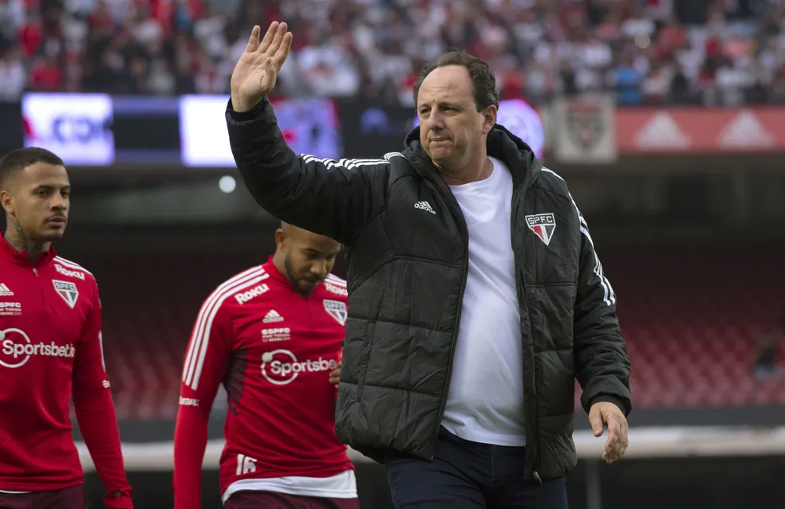

Testando Media Queries
Palmeiras se classifica para Libertadores 2023, e chances de ser campeão do Brasileirão vão a 81%
Projeção do Espião Estatístico indica também que Coritiba e Cuiabá, que se enfrentam na última rodada, em Cuiabá, travarão disputa particular na luta para permanecer na Série A em 2023
A combinação de resultados da rodada #26 do Brasileirão transformou o Palmeiras na primeira equipe brasileira classificada para a Libertadores 2023. Dados do Espião Estatístico indicam que o atual bicampeão continental assegurou ao menos a sexta colocação do Campeonato Brasileiro, que classifica os seis primeiros colocados para a principal competição sul-americana de clubes. Além do já garantido Palmeiras, outras seis equipes abriram larga vantagem para disputarem entre si as outras cinco vagas para a Libertadores: Flamengo, Internacional, Fluminense, Athletico-PR, Corinthians e Atlético-MG têm mais de 50% de chances de acabar o Brasileirão entre os seis primeiros colocados. É abissal a diferença entre a probabilidade deles e a do Goiás, o próximo da fila e que hoje tem 6% de chances de se classificar para a Libertadores após o empate em casa com o Flamengo.
Análise: estratégia dá certo, e São Paulo vai para decisão fortalecido e descansado
Tricolor empata clássico contra o Corinthians com time repleto de reservas; quinta, equipe enfrenta o Flamengo na semifinal do torneio mata-mata
O técnico Rogério Ceni arriscou contra o Corinthians e levou a campo um São Paulo repleto de reservas e com a improvisação do zagueiro Luizão como lateral-esquerdo. A estratégia era descansar os titulares para o confronto de quarta-feira, diante do Flamengo, pela semifinal da Copa do Brasil. Uma estratégia ousada, mas que no fim das contas deu certo. O São Paulo buscou o empate, não desgastou seus principais jogadores e vai fortalecido e confiante de que garantir uma vaga na final da Copa do Brasil não é uma utopia.
